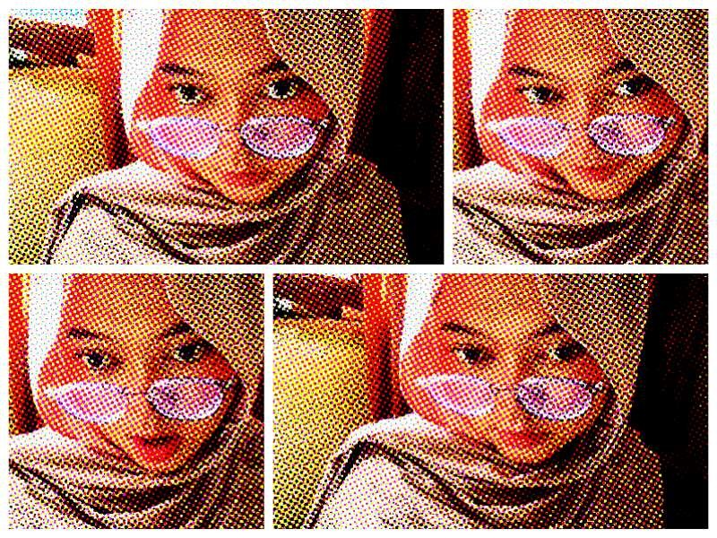

 Dengan menyebut nama Allah yang maha pengasih lagi maha penyayang. Yang kasih dan sayangnya tidaklah pernah berbilang. Yang kasih dan sayang-Nya tak pernah usang, meskipun dunia ini sudah menghilang. Begitu besar kasih sayang-Nya Allah kepada makhluknya, yang sepatutnyalah kita mensyukurinya atas segala karunia yang diberikan-Nya. Berbahagialah orang yang bisa mengaplikasikan syukur dalam hidup dan kehidupan ini. Karena hakikat dari Syukur bukanlah sekedar diucapkan oleh lisan, tapi bagimana syukur itu bisa diaplikasikan dalam kehidupan.
Sholawat serta salam tak lupa selalu kita panjatkan kepada junjungan kita Muhammad SAW. Yang telah Allah turunkan kepada kita semua untuk kita jadikan suri tauladan. Dan maha kasihnya Allah menurunkan Rosul terakhirnya dari golongan manusia. Bagaimana kalau Allah menurunkan Rosul terakhirnya dari golongan Malaikat atau Jin, sudah barang tentu kita tidakkan mampu untuk mencontoh perilaku beliau.
Selamat mengunjungi web yang sangat sederhana ini, Selamat mengunjungi, kritik dan saran yang membangun sangat diharapkan demi lebih baiknya lagi tampilan web ini.
Pendidikan
SDN CISEENG 02
SMP NEGERI 01 CISEENG
SMAN 1 CISEENG
STT NURUL FIKRI
hobby
membaca Au
me time
mendengarkan musik
Menu Favorite
Dimsum
mochi
Kebab